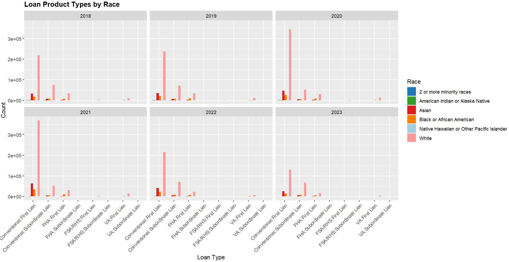
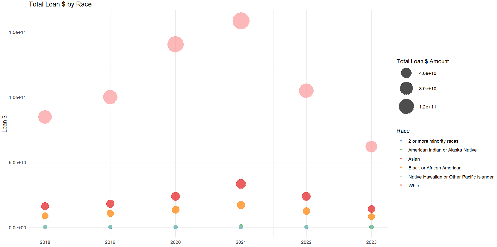
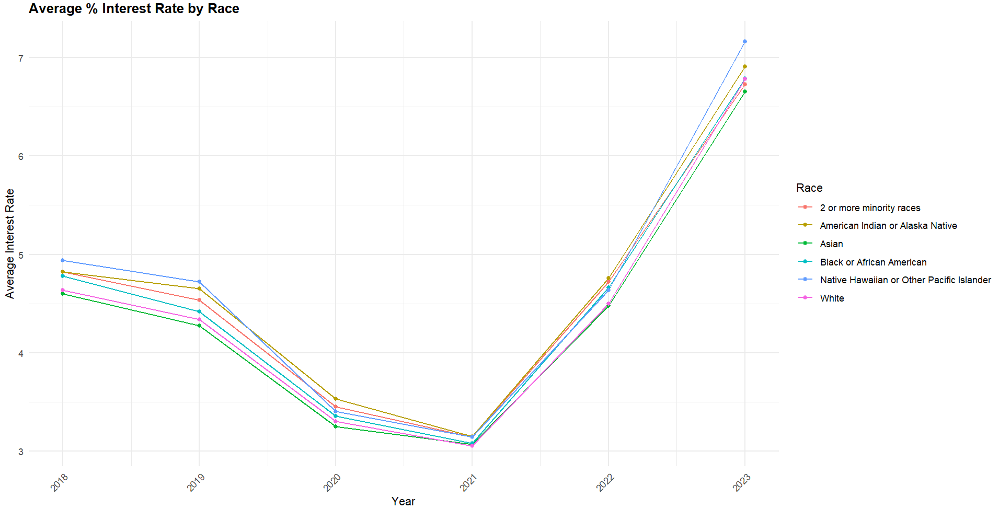
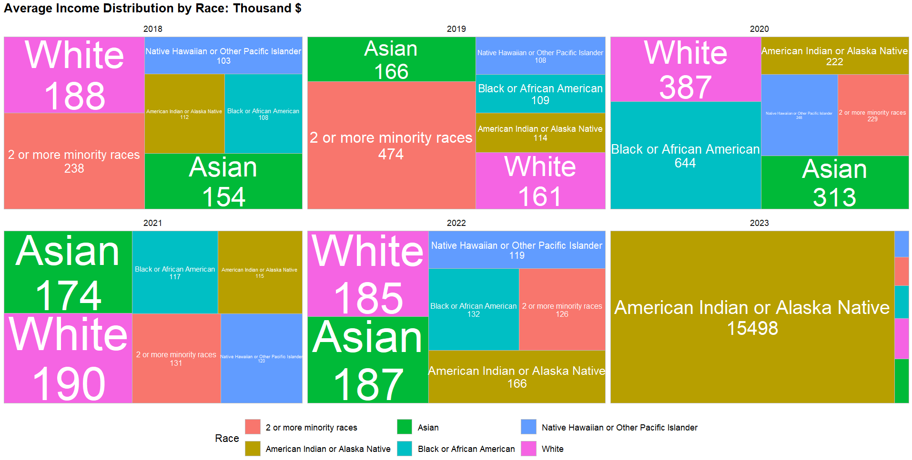

Final Individual Report - Broker T’s
Mortgages what’s the big deal ? Stage 2 Analysis


How does county, income, and demographics affect mortgage loans and rates through the three stages of covid?
Overview:
Our group , the Broker T’s, looked into the Shift of Mortgages Pre, During, Post Pandemic (2018-2023) based on three metrics: GEO, DEMO, & ECON. Each member was assigned a metric to analyse, of which I worked on DEMO. One of the biggest questions diving into this analysis was: how does equity hold after applying multiple conditions to mortgage data? To narrow down on analysis we decided to focus on the following key conditions for Stage 2 analysis: Loan types, Mortgage Loan Dollars, Mortgage Rates, and Income distribution [ other metrics added for stage 1 and 3 analysis]. In the following I will run through this analysis process and some insights.
Data Sources:
To begin we had to research and find legitimate data sources for mortgages in the U.S. Below you will see the data sources used, for full description of data sources you can access GROUP FINAL REPORT. We filtered and narrowed down to N.Y. state data only.
Consumer Financial Protection Bureau
United States Census Bureau
Code
Extracting data and reading into RStudio:
For stage 2 analysis HMDA data sufficed, although there was an API available, API was not used to extract data due to API filter types & formating , and timing. The size of our data allowed us to download 2018-2023 files and read as CSV. You can view GIT FILE for full HMDA data extract code. Additionally you can view our CENSUS DATA EXTRACT CODE as needed.
One of the biggest challenges was combining both extracted data, however, teamwork made the dream work and we managed to combine data.
Analysis Results
Stage Two Analysis and Insights:
One of the biggest questions was to find where equity fell in the mortgage equation? Was there a race that benefited most /less from mortgage loans, rates, types, etc.? We started with a few messy questions which evolved into the final questions below.
- What loan type is most popular among races? Does one benefit more than others?
- Who has the greatest loan $ by race? Does one benefit more than others?
- What are the interest rates by race? Does one benefit more than the others?
- What are the average income distributions by race? Does one benefit more than the others?
The below graphs were the results of this analysis. For full analysis explanation you can view GROUP FINAL REPORT.




It was no surprise to view some races benefited more than others, as confirmed by the data; White, Asian at the top/most benefited, and 2 or more minority races at bottom/least benefited. This triggered further questions: How can we create a more equitable system? Was there other underlying reasons that would shift equitability among races? What was the data accuracy; How accurate is the data?
As you will see from data analysis in GROUP FINAL REPORT, we find a point where equitability is possible. There is hope. But, perhaps looking into other fields of data to correlate to this is further necessary to make a final conclusion. For example, looking into Job/Occupation by race and average paying rates by occupation, if salary is a big factor for mortgage approvals. Additionally, analysis of down payment percent distribution per loan type by race could give us a sense into why one race has more $ loans than others; too much/too little down payment. Lastly, the question of data accuracy comes at data input, is race being filled out correctly, how do people identify with which race? Another important fact to note is that we also had omitted fields from our analysis like “prefer not to answer”, and “undisclosed race” for clean up processes. There are multiple approaches we could take for a ‘final conclusion’, but the key in my perspective lies at the accuracy of data input. However, we can also agree that this analysis only reflects a truth always know in the U.S. and that echos at us in many ways.
Conclusion
DEMO is a controversial set of data to analyse. More so now in such a polarized state of humanity, where civilization is crying for equality and equity from the top of their lungs. But perhaps it is one of the most important sets of data to analyse, to fix a system that has been broken, and help lead a better path, at this point of inflection, that civilization is walking through.